Switch reminders and notices on or off, and set their timing
In the office app, press Help and type switch reminders and notices on or off, and set their timing
: the tour plays on your own screen, with your own data.
-
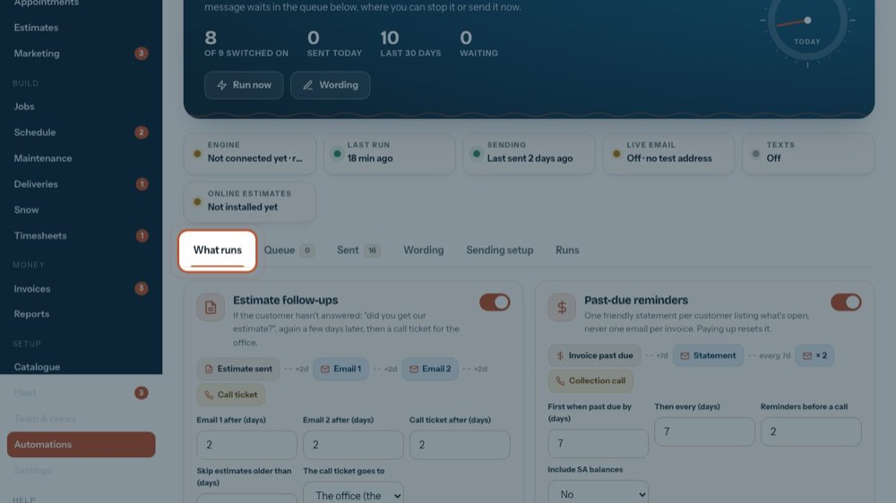
1What runs
Every automation, one card each.
-
 2
2Estimate follow-ups
No answer to an estimate: Email 1 after the days you set, Email 2 later, then a call ticket for the office. Estimates older than the last number are skipped.
-
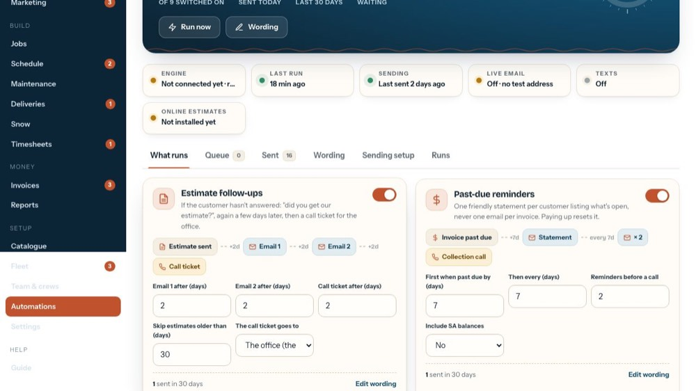
3The switch
Turns it on or off and saves at once.
-
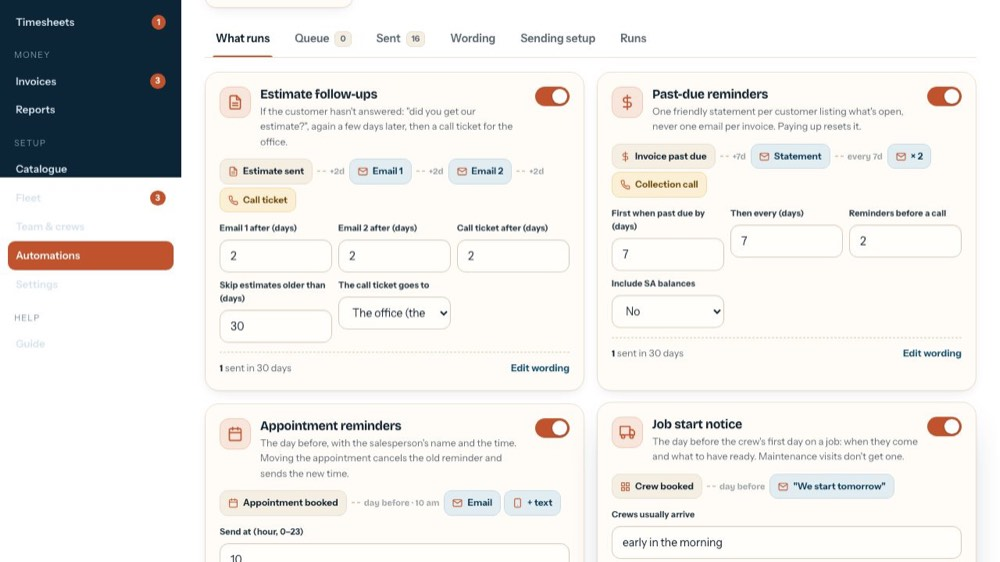
4Its timing
Change a number and the flow above follows it. Press the Save button that appears on the card to keep it.
-
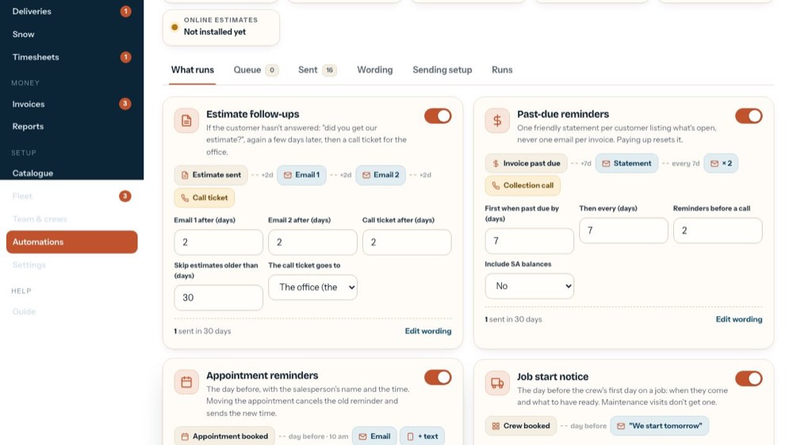
5Past-due reminders
One statement per customer listing what's open: first after the days past due, then every few days, up to the number set; then a collection call. It can include SA balances.
-
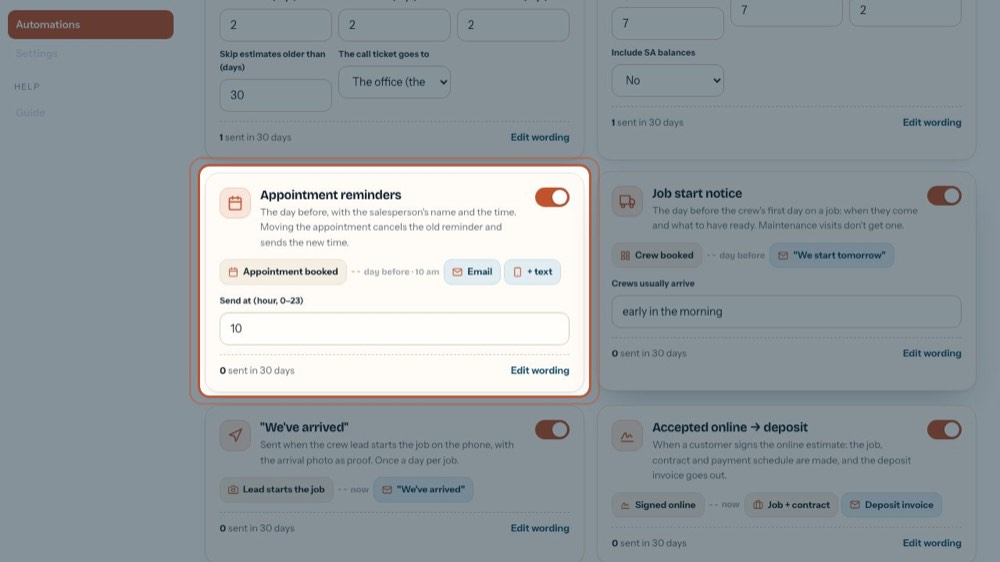
6Appointment reminders
The day before, at the hour you set (0–23, 10 = 10 am), by email and by text when texts are on. Moving the appointment sends the new time.
-
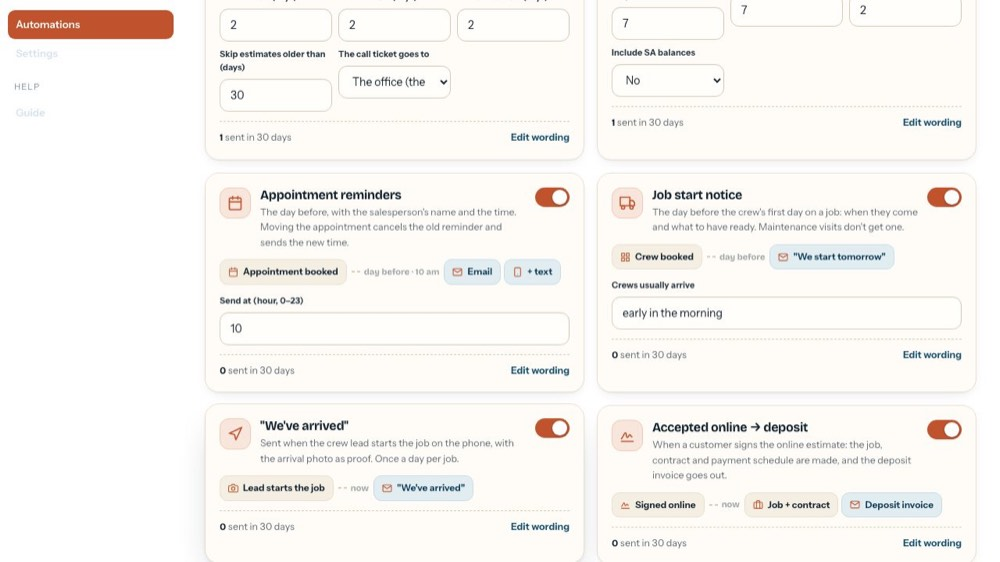
7Job start notice
The day before a crew's first day on a job. "Crews usually arrive" is the wording for when they come. Maintenance visits don't get one.
-
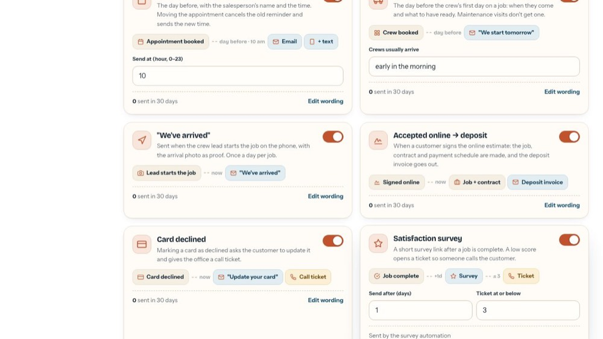
8"We've arrived"
Sent when the crew lead starts the job on the phone, with the arrival photo. Once a day per job.
-
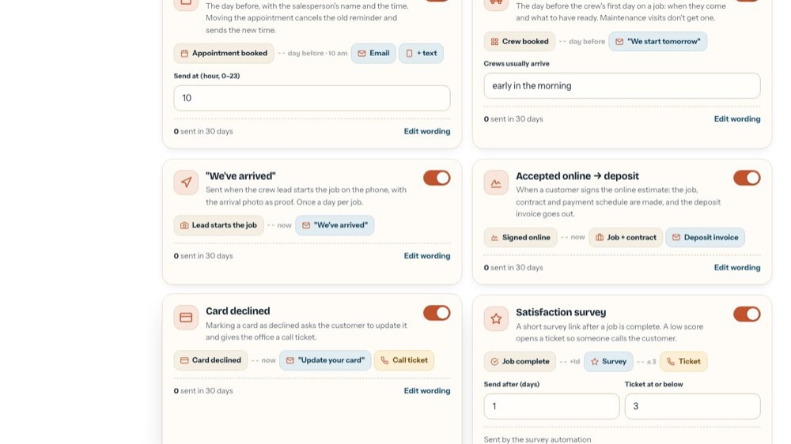
9Accepted online → deposit
When a customer signs the online estimate, the job, contract and payment schedule are made and the deposit invoice is emailed.
-
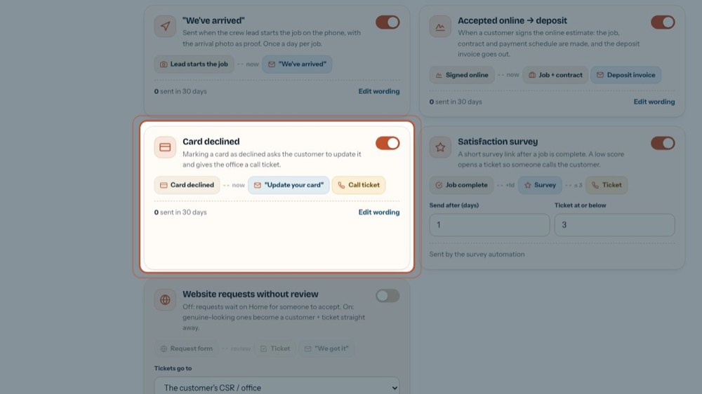
10Card declined
Marking a card as declined emails the customer to update it and gives the office a call ticket.
-
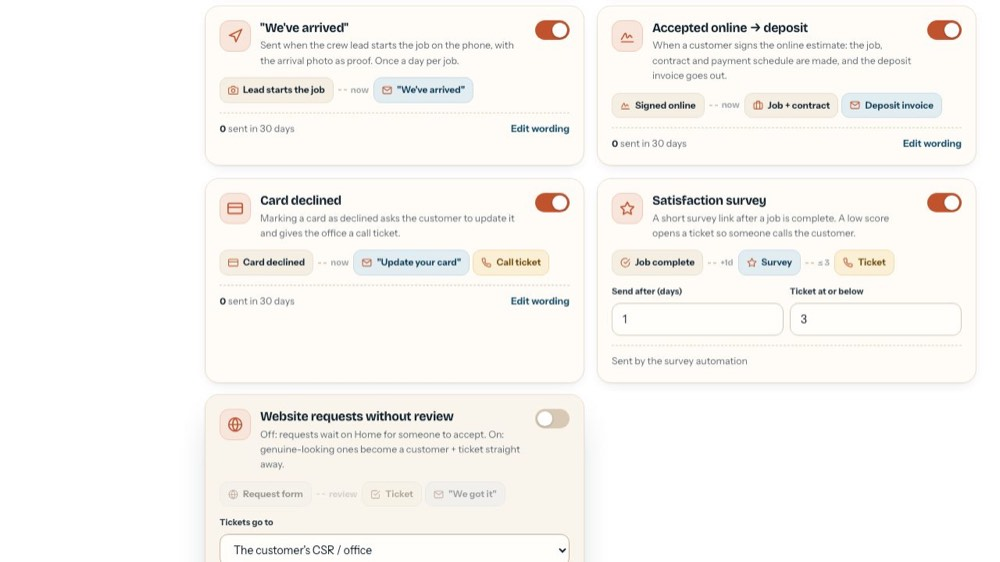
11Satisfaction survey
A short survey link the days you set after a job is complete. A score at or below your number opens a ticket so someone calls the customer.
-
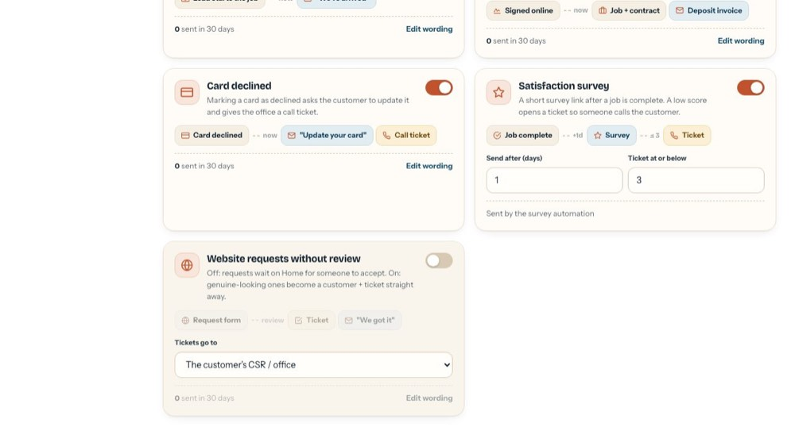
12Website requests
Off: requests wait on My day for someone to accept. On: genuine-looking ones become a customer and a ticket at once, for the person in "Tickets go to".
-
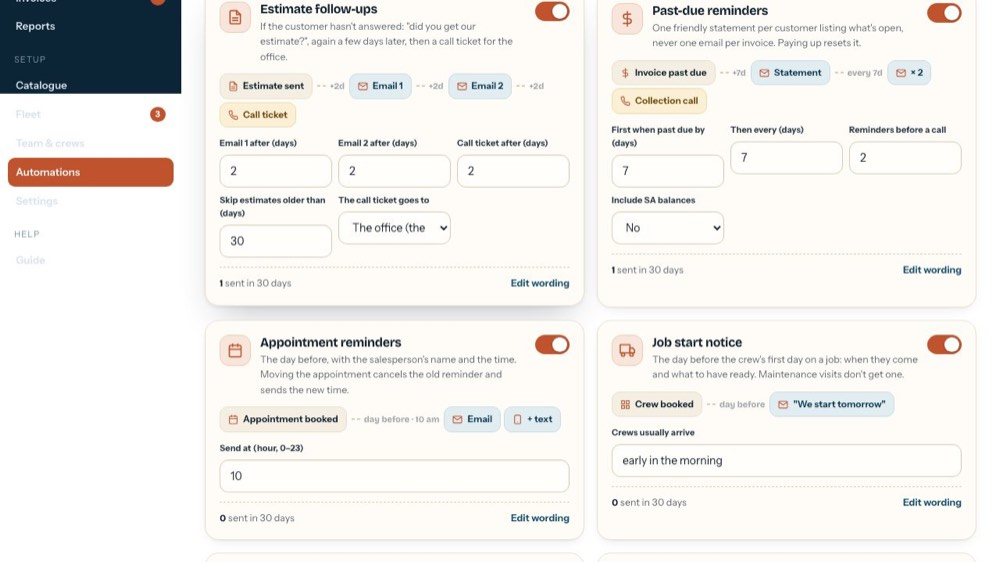
13Sent and wording
Each card says how many went out in the last 30 days. Edit wording opens its message.